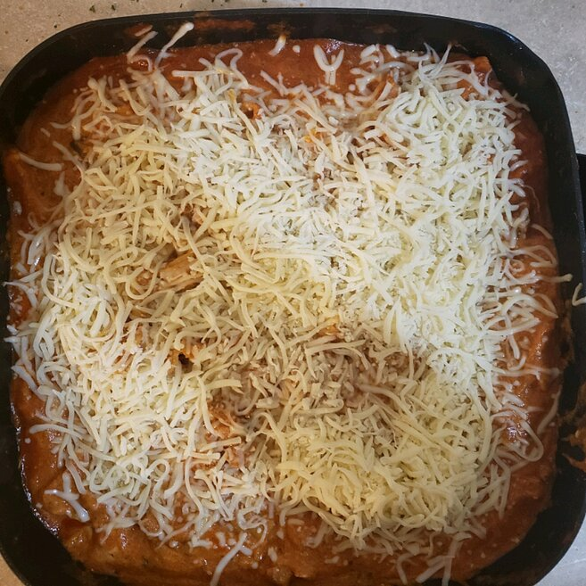

Lasagna

Description
Easy and cheesy skillet lasagna.
Lasagna with sausage, mushrooms, and lots of
cheese is fast and easy on the stove top--
and there's no compromise on flavor.
Ingredients
- 1 tablespoon olive oil
- 1 medium onion, diced
- 1 pound hot Italian sausage
- 1 medium red bell pepper, diced
- 2 cups sliced mushrooms
- 1 (24 ounce) jar of Ragu Traditonal Sauce
- 1 (9 ounce) package no-boil lasagna sheets, broken into large pieces"
- 1 cup water
- 1/2 teaspoon crushed dried rosemary
- 8 ounces ricotta cheese
- 8 ounces part-skim mozzarella cheese, shredded and divided
- 2 tablespoons minced fresh Italian parsley
Steps
- Heat a large skillet over medium high heat
and add olive oil. Swirl to coat. Add the onion
and saute until translucent, about 5 minutes.
Add the sausage, red pepper, and mushrooms;
saute until meat is cooked through, about 5 minutes.
- Stir in the Ragu® Old World Style® Traditional sauce,
broken lasagna noodles, water, and rosemary.
Cover and turn heat down to medium-low.
- Cook for 20 minutes, stirring occasionally, until the pasta
is al dente. Remove the lid and add the ricotta, 2/3 of
the cheese, and parsley; stir to combine.
Top with remaining mozzarella and serve immediately.
Back to recipes